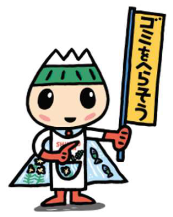

|  | ５３７４アプリ 駿東郡清水町版◎Regarding the rubbish classification,please refer to the Shimizu town website or contact the Community Promotion Department at the Shimizu town office. TEL 055-973-1111（代表） |
●Please do not leave any garbage other than burnable garbage, unburnable garbage and plastic garbage at your usual collection place.
●Whenever you need to throw away used batteries, please bring to the town hall or your district community center where collection cans are set.
●We do not collect any industrial refuse.
●We do not collect any dangerous substance such as tire, motorbike, battery, used oil, and chemical as in agricultural chemicals.
●TV, refrigerator, washing machine, air conditioner, drying machine and computer would not be collected.
For the separation of garbage etc., please visit the website of Shimizu Town or contact the Shimizu Town Office Regional Promotion Division.
清水町役場地域振興課までお問い合わせください。
Round or fold in and carry in.
If possible, please disassemble and bring it in.
If possible, please disassemble and bring it in.
If possible, please disassemble and bring it in.
If possible, please disassemble and bring it in.
Take it out of the box and bring it in.
Take it out of the box and bring it in.
Take it out of the box and bring it in.
For items less than 50 cm, plastic garbage is also possible
If possible, please disassemble and bring it in.
Take it out of the box, Take out kerosene and batteries.
Fluorescent tubes are unburnable garbage.
Take it out of the box and bring it in.
To pay the soil and bring it in.
Take it out of the box and bring it in.
Take it out of the box and bring it in.
For portable gaming machines, unburnable garbage is also possible.
Consult with dealer or Shimizu-cho Silver Human Resource Center.
Contact your dealer or specialist.
Contact your dealer or specialist.
Contact your dealer or specialist.
Contact each manufacturer or JEITA or the like.
Contact your dealer or specialist.
Contact your dealer or specialist.
Contact your dealer or specialist.
Contact your dealer or specialist.
Contact the dealer.
Contact your dealer or specialist.
Contact your dealer or specialist.
Contact your dealer or specialist.
Contact your dealer or specialist.
Contact your dealer or specialist.
Consult with dealer or Shimizu-cho Silver Human Resource Center.
Contact your dealer or specialist.
Contact your dealer or specialist.
Contact your dealer or specialist.
Consult with dealer or Shimizu-cho Silver Human Resource Center.
Consult with dealer or Shimizu-cho Silver Human Resource Center.
一番近いゴミの日とジャンルを上から順に表示しています。
ゴミのジャンルをタップすると、捨てることが可能なゴミの一覧を見ることができます
お住まいの地域を選択することで、ゴミ収集日が自動的に更新されます。
駿東郡清水町が公開している分別収集カレンダーから独自に解析し、アプリに実装しました。
本アプリの著作権はCode for Kanazawaに帰属します。
コードで、世界をHappyに。
各地域には様々な課題があり、解決するためのコミュニティ（団体）も数多くあります。
課題の中には、ITやデザインの力で解決できるものも多くありますが、全てのコミュニティにそのスキル（技術）が備わっているわけではありません。
Code for Kanazawa（CfK）は、市民の課題を集め、その課題を整理・分析した上で、メンバーが実際に課題解決となるソフトウェアやハードウェア（仕組みや方法）を開発します。
私たちは、デザインをして、ソフトウェアコードを書き、課題を解決するサービスを完成させるのです。さらに、そのサービスを提供し続ける力も持ちます。
CfKは市民のための組織です。行政や民間企業の影響を受けずに中立・公益の立場から物事を判断するよう心がけています。
公式サイト
http://www.codeforkanazawa.org/